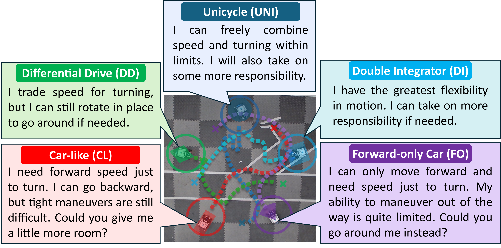
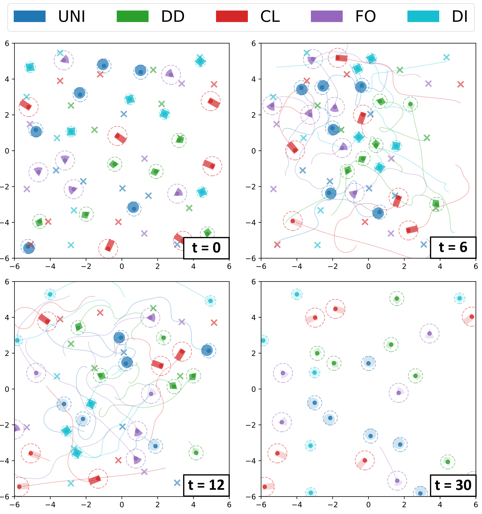
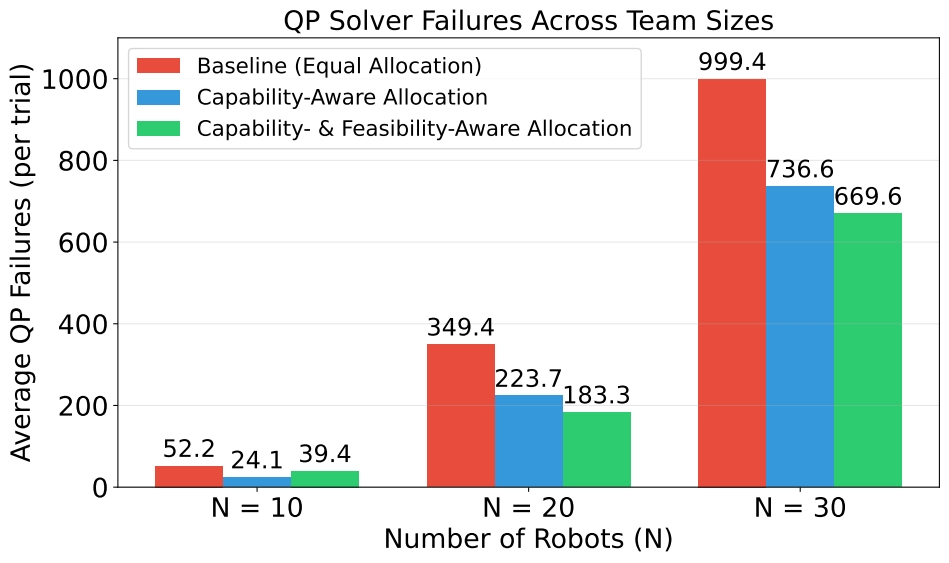
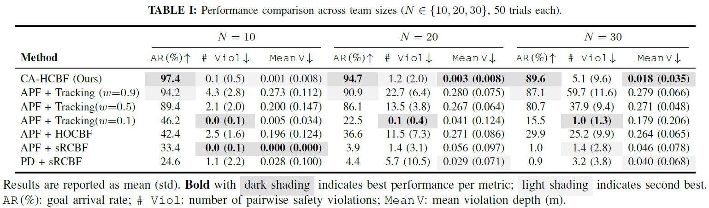

Capability-Aware Heterogeneous Control Barrier Functions for Decentralized Multi-Robot Safe Navigation
Abstract
Safe navigation for multi-robot systems requires enforcing safety without sacrificing task efficiency under decentralized decision-making. Existing decentralized methods often assume robot homogeneity, making shared safety requirements non-uniformly interpreted across heterogeneous agents with structurally different dynamics, which could lead to avoidance obligations not physically realizable for some robots and thus cause safety violations or deadlock. In this paper, we propose Capability-Aware Heterogeneous Control Barrier Function (CA-HCBF), a decentralized framework for consistent safety enforcement and capability-aware coordination in heterogeneous robot teams. We derive a canonical second-order control-affine representation that unifies holonomic and nonholonomic robots under acceleration-level control via canonical transformation and backstepping, preserving forward invariance of the safe set while avoiding relative-degree mismatch across heterogeneous dynamics. We further introduce a support-function-based directional capability metric that quantifies each robot's ability to follow its motion intent, deriving a pairwise responsibility allocation that distributes the safety burden proportionally to each robot's motion capability. A feasibility-aware clipping mechanism further constrains the allocation to each agent's physically achievable range, mitigating infeasible constraint assignments common in dense decentralized CBF settings. Simulations with up to 30 heterogeneous robots and a physical multi-robot demonstration show improved safety and task efficiency over baselines, validating real-world applicability across robots with distinct kinematic constraints.

Five mobile robots with heterogeneous kinematic classes (DI, UNI, DD, CL, FO) navigate toward individual goals. Each robot's statement reflects its directional motion capability.

Random start-goal scenario with 30 robots (5 per model) at multiple timestamps showing CA-HCBF navigation performance.

Average QP infeasibility events per trial across different team sizes, showing the effectiveness of capability-aware allocation.

Performance comparison across team sizes showing arrival rate, violation count, and mean violation depth.
BibTeX
@article{kim2026cahcbf,
title={Capability-Aware Heterogeneous Control Barrier Functions for Decentralized Multi-Robot Safe Navigation},
author={Kim, Joonkyung and Zhang, Yanze and Luo, Wenhao and Lyu, Yiwei},
journal={Preprint},
year={2026}
}